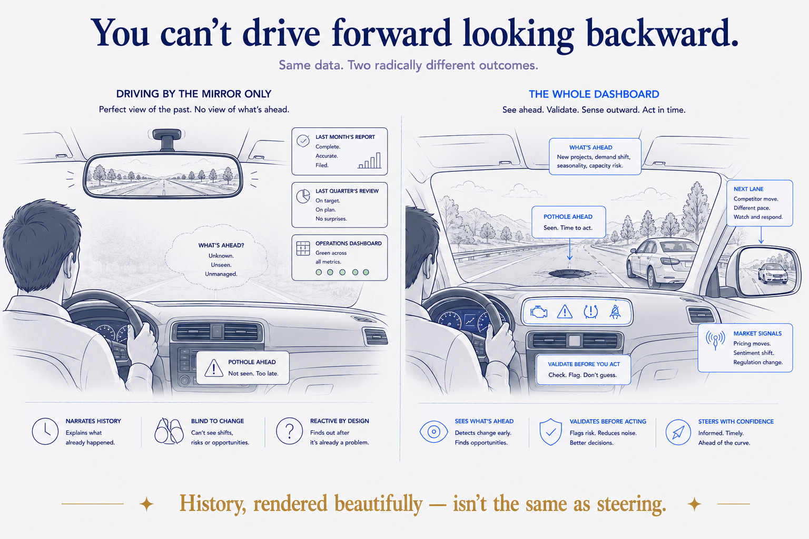
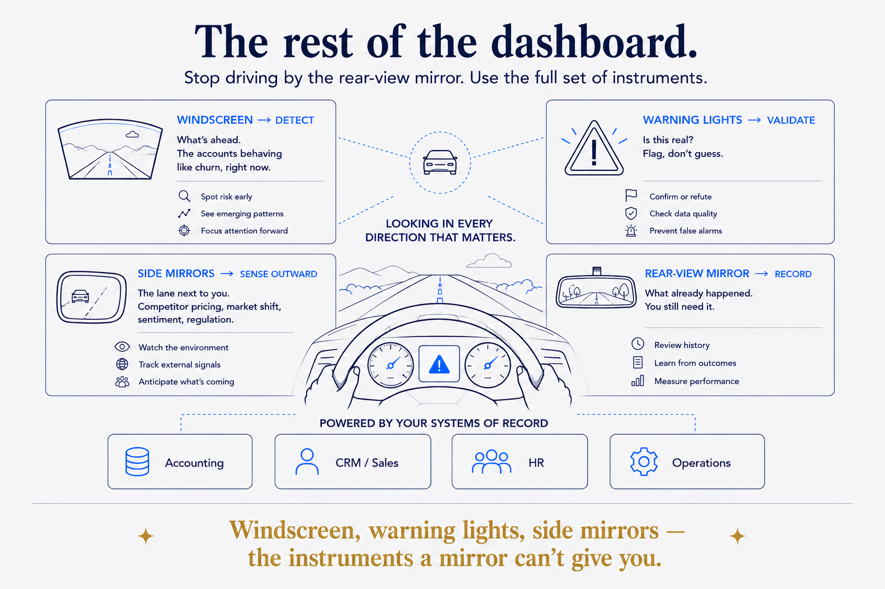

The most expensive mirror money can buy
Picture the systems your organisation depends on. The finance system that knows every transaction to the cent. The CRM that logs every deal and touchpoint. The HR platform that tracks every employee. The operational system that records every order, shipment, and incident.
They are accurate. They are detailed. They cost a fortune, and they're worth it. But notice what they all have in common: every one of them tells you about the past. A transaction that already posted. A deal that already closed. A shipment that already went out. They are, by design, a record of what happened.
That's a rear-view mirror. A very good one — crisp, comprehensive, trustworthy. And here's the uncomfortable part: for many organisations, it's the only instrument on the dashboard. All that investment, all that data, and it's pointed backward.
You can't drive forward looking backward
No one would drive a car with only a rear-view mirror. You'd have a perfect view of where you'd been and no idea what was in front of you. You'd react to the pothole only after you'd hit it — you'd feel it in the mirror as it receded.
Yet that's the operational reality in a lot of companies. The monthly report says what happened last month. The quarterly review dissects the quarter that just ended. The dashboard is green until, suddenly, it isn't — and by the time it turns red, the thing it's reporting is already behind you. Everyone is looking at the mirror, describing the road they've already driven, and calling it insight.
It isn't insight. It's history, rendered beautifully. History matters — but if it's all you've got, you're not steering. You're narrating.

The rest of the dashboard
The fix isn't a better mirror. You don't need your reports to be more accurate about the past; they're already accurate. You need the instruments a mirror can't provide. There are three, and together they're what a real dashboard looks like.
The windscreen — what's ahead. This is the ability to detect what's changing before it shows up in the quarterly numbers. Not "revenue was down last month" but "these three accounts are behaving like accounts that churn, right now." The windscreen turns your own data from a record of the past into an early view of what's coming.
The warning lights — is what I'm seeing real. A dashboard you can't trust is worse than none, because you act on it with false confidence. This is the discipline of the system checking its own data — flagging the figure that doesn't reconcile, the number that looks off, rather than reporting it straight-faced. When something's wrong, a good dashboard lights up and says don't trust this yet. It flags; it doesn't guess.
The side mirrors — what's happening around you. Your own records know everything about you and nothing about the lane next to you: the competitor's price change, the shift in your market, the sentiment turning in your customers' reviews, the regulation coming down the road. That's where most of the risk and opportunity actually lives, and no internal system will ever hold it. The side mirrors bring the outside world into view.
Windscreen, warning lights, side mirrors. Put them together with the mirror you already have, and for the first time you're looking in every direction that matters — not just behind.

Why the rest of the dashboard is usually missing
If this is so obvious, why do so few organisations have it? Because the mirror is easy to buy and the rest of the dashboard is hard to build. Every vendor will sell you a system of record; they're well-defined products with clear owners. The forward-looking layer doesn't belong to any one department, so no one department builds it. It requires your data to be joined up enough to see across, an AI trusted enough to rely on, and — the part almost everyone skips — the rules and checks that keep it honest.
Most companies have fragments. A data team here, an AI pilot there, a stack of BI dashboards somewhere else. What they don't have is those fragments assembled into a single instrument that looks forward, checks itself, and watches the road around them. So they keep polishing the mirror, because polishing the mirror is a project you know how to run.
Start by admitting you're driving blind
The hardest thing about a missing windscreen is that nothing feels broken. The mirror still works. The reports still render. You only notice the absence in the near-misses — the churn you saw coming a quarter too late, the competitor move you read about in the trade press, the bad number you presented to the board with total confidence. Those aren't bad luck. They're what driving by the mirror feels like from the inside.
So the honest question for any leadership team isn't "are our reports accurate?" They probably are. It's: do we have anything that looks forward? Anything that tells us what's changing, checks whether it's true, and watches the world outside — before it shows up in next quarter's rear-view? If the answer is "we have dashboards," then you have a mirror, and only a mirror. The good news is that once you've seen the whole dashboard, you can't unsee how little of the road you were actually watching.
This is the accessible version of a fuller argument I've made about the "missing system" — the intelligence layer built from data, AI, and rules that most organisations never install. If you want the architecture underneath the metaphor, that's where it lives.